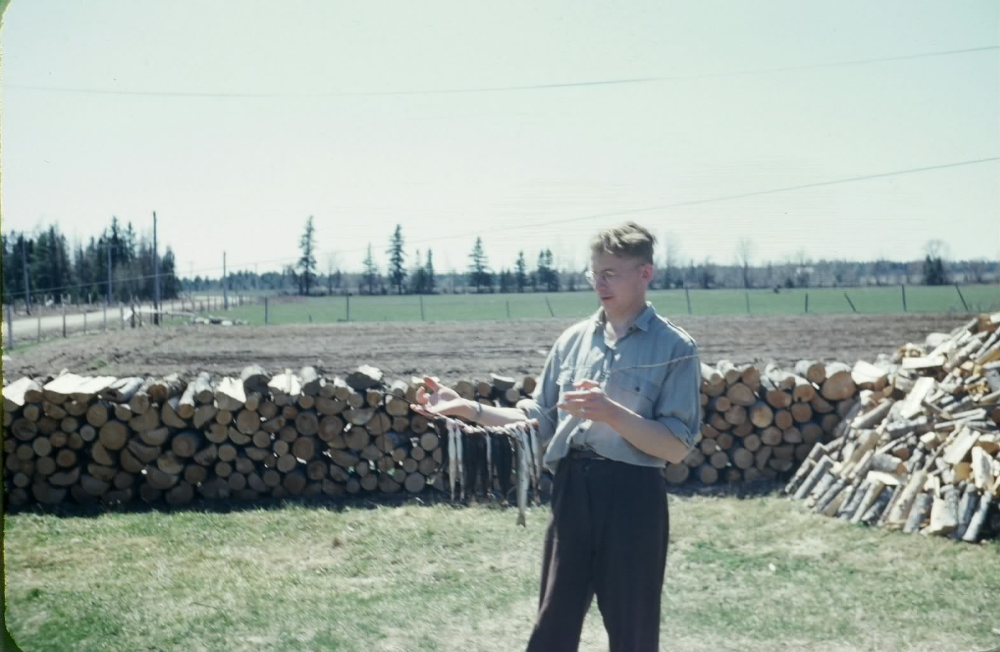
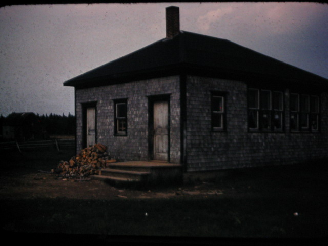

The Family Chronicle
No. 142 , 2007
More fish (and some fish stories)


Fish are elusive. The above show some of my catches. As I recall, most of the above would be between 2 and 3 pounds. Unfortunately, I cannot find photos of the really large ones. If I do come across them, I will include them in later issues of the Chronicle.
Readers may realize that the lower photo is reversed. It was taken in the front yard and the road should be on the right. The row of wood in the centre was two foot furnace wood drying for the coming winter; it also separated the front yard from the adjacent field.
Middlings
Who remembers bran, shorts and middlings? Add to that the flour ground at the “Monks” in Rogersville and getting Robin Hood by the bag. It brings back many memories. But let me explain.
All of the above products are related, they all come from wheat and are byproducts of flour milling..
Bran comes mostly from the outer skin and can be either coarse or fine ground.
Middlings are finer ground than bran and are mixture of the outer skin of the wheat and some of the inner parts.
Shorts are a mixture of the outer and inner part of a grain of wheat and contain less outer fibre than middlings.
At one time Fowlie’s had a both a grist mill and sawmill but that was before my time.
Sometimes we took wheat to Rogersville to be milled by the “Monks” – I do not know the order. The resulting flour was really whole wheat flour, and an off-white in colour.
Robin Hood by the bag, and a 100 pound bag at that, was the favourite at our place and, like white flour today, had much of the “nutritional value” removed.
We also grew oats which we took to Adams to be crushed; later we had our own crusher. A mixture of crushed oats, bran, shorts and middlings was fed to the cattle and, presumably, to pigs as well.
There was also an oilcake meal, probably from sunflower seeds, added to the mix but neither Norman or can remember the detail.
Porridge
The roughage of whole wheat flour, from the mill at Rogersville, was good for the bowels. One neighbour who made porridge from such flower referred to it as “slipgut”. When teaching nutrition at the Little Branch Schoo, the teacher asked the class what they had had for breakfast. To which one student replied “some mornings we have porridge and other times we have “slipgut.”
Flour bags
Most homes bought flour by the 100 pound bag and often, like groceries an feed, delivered once or twice a week from Chatham and Loggieville by truck. Bags were made of heavy quality cotton sewed at both ends and along one side. When empty, the stitching was removed, the bags were washed and bleached and then used to make clothing.
My first school

I started teaching at the above school, Middle Kouchibouguac, NB, in September 1947. As I recall, I hahd about 21 students in Grades 1-8 plus 3 older students who were taking high school subjects by correspondence.
The Family Chronicle (Copyright) is an occasional newsletter published by Don Glendenning and posted on the family website. It is intended to share information about my family, community and the times in which I grew up. While every effort is made to be accurate, errors are likely to occur. Comments, enquiries and information may be sent to 62 Queen Elizabeth Drive, Charlottetown, PEI, C1A 3A9. Tel: 902 892 5859. Email: don@glendenning.net Web: www.glendenning.net/don